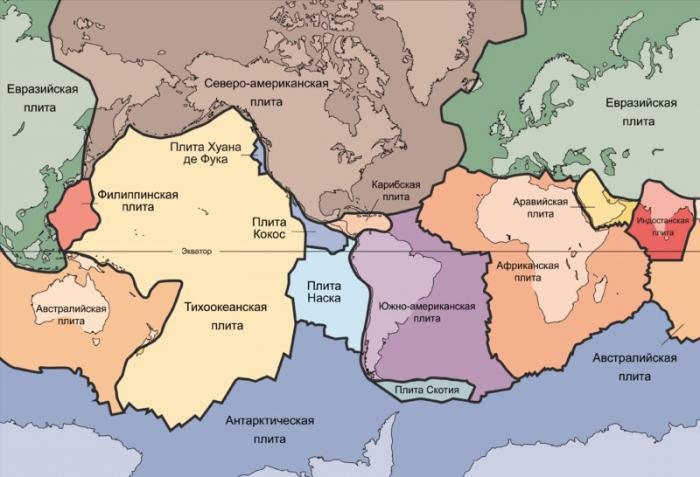

Земля — третья от Солнца планета. Пятая по размеру среди всех планет Солнечной системы. Она является также крупнейшей по диаметру, массе и плотности среди планет земной группы.
Научные данные указывают на то, что Земля образовалась из солнечной туманности около 4,54 миллиарда лет назад и вскоре после этого приобрела свой единственный естественный спутник — Луну. Предположительно жизнь появилась на Земле примерно 4,25 млрд лет назад, то есть вскоре после её возникновения. С тех пор биосфера Земли значительно изменила атмосферу и прочие абиотические факторы, обусловив количественный рост аэробных организмов, а также формирование озонового слоя, который вместе с магнитным полем Земли ослабляет вредную для жизни солнечную радиацию, тем самым сохраняя условия существования жизни на Земле. Радиация, обусловленная самой земной корой, со времён её образования значительно снизилась благодаря постепенному распаду радионуклидов в ней. Кора Земли разделена на несколько сегментов, или тектонических плит, которые движутся по поверхности со скоростями порядка нескольких сантиметров в год. Изучением состава, строения и закономерностей развития Земли занимается наука геология.
Современной научной гипотезой формирования Земли и других планет Солнечной системы является гипотеза солнечной туманности, по которой Солнечная система образовалась из большого облака межзвёздной пыли и газа. Облако состояло главным образом из водорода и гелия, которые образовались после Большого взрыва, и более тяжёлых элементов, оставленных взрывами сверхновых. Примерно 4,5 млрд лет назад облако стало сжиматься, что, вероятно, произошло из-за воздействия ударной волны от вспыхнувшей на расстоянии нескольких световых лет сверхновой. Когда облако начало сокращаться, его угловой момент, гравитация и инерция сплюснули его в протопланетный диск перпендикулярно к его оси вращения. После этого обломки в протопланетном диске под действием силы притяжения стали сталкиваться, и, сливаясь, образовывали первые планетоиды.
В процессе аккреции планетоиды, пыль, газ и обломки, оставшиеся после формирования Солнечной системы, стали сливаться во всё более крупные объекты, формируя планеты. Примерная дата образования Земли — 4,54±0,04 млрд лет назад. Весь процесс формирования планеты занял примерно 10-20 миллионов лет.
Геохронологическая шкала — геологическая временная шкала истории Земли; применяется в геологии и палеонтологии, своеобразный календарь для промежутков времени в сотни тысяч и миллионы лет. Впервые геохронологическая шкала фанерозоя была предложена английским геологом А. Холмсом в 1938 году. Из-за отсутствия останков фауны, геохронологическая шкала докембрия построена, в основном, по данным определений абсолютных возрастов пород на разных континентах.
История Земли разделена на различные временные промежутки. Их границы проходят по важнейшим событиям, которые тогда происходили.Граница между эрами фанерозоя проведена по крупнейшим эволюционным событиям — глобальным вымираниям. Палеозойская эра отделена от мезозойской крупнейшим за историю Земли массовым пермским вымиранием. Мезозойская эра отделена от кайнозойской мел-палеогеновым вымиранием.
Существует ряд теорий возникновения жизни на Земле. Около 3,5—3,9 млрд лет назад появился «последний универсальный общий предок», от которого впоследствии произошли все другие живые организмы/
Развитие фотосинтеза позволило живым организмам использовать солнечную энергию напрямую. Это привело к наполнению кислородом атмосферы, начавшемуся примерно 2,5 млрд лет назад, а в верхних слоях — к формированию озонового слоя. Симбиоз мелких клеток с более крупными привёл к развитию сложных клеток — эукариот. Примерно 2,1 млрд лет назад появились многоклеточные организмы, которые продолжали приспосабливаться к окружающим условиям. Благодаря поглощению губительного ультрафиолетового излучения озоновым слоем жизнь смогла начать освоение поверхности Земли.
В 1960 году была выдвинута гипотеза Земли-снежка, утверждающая, что в период между 750 и 580 млн лет назад Земля была полностью покрыта льдом. Эта гипотеза объясняет кембрийский взрыв — резкое повышение разнообразия многоклеточных форм жизни около 542 млн лет назад. В настоящее время эта гипотеза получила подтверждение.
«Это первый случай, когда показано, что в ледниковую эпоху Sturtian лёд доходил до тропических широт, прямое доказательство того, что в данное оледенение существовала „Земля-снежок“, — говорит ведущий автор работы Френсис Макдоналд (Francis A. Macdonald) из Гарварда (Harvard University). — Наши данные также показывают, что это оледенение продолжалось как минимум 5 миллионов лет».
«Возраст изученных ледниковых отложений близок к возрасту большой магматической провинции, протянувшейся на 930 миль на северо-востоке Канады[67], что косвенно подтверждает большую роль вулканизма в освобождении планеты из ледяного плена».
Земля относится к планетам земной группы, и в отличие от газовых гигантов, таких как Юпитер, имеет твёрдую поверхность. Это крупнейшая из четырёх планет земной группы в Солнечной системе, как по размеру, так и по массе. Кроме того, Земля среди этих четырёх планет имеет наибольшие плотность, поверхностную гравитацию и магнитное поле. Это единственная известная планета с активной тектоникой плит.
Недра Земли делятся на слои по химическим и физическим (реологическим) свойствам, но в отличие от других планет земной группы, Земля имеет ярко выраженное внешнее и внутреннее ядро. Наружный слой Земли представляет собой твёрдую оболочку, состоящую главным образом из силикатов. От мантии она отделена границей с резким увеличением скоростей продольных сейсмических волн — поверхностью Мохоровичича. Твёрдая кора и вязкая верхняя часть мантии составляют литосферу. Под литосферой находится астеносфера, слой относительно низкой вязкости, твёрдости и прочности в верхней мантии
Значительные изменения кристаллической структуры мантии происходят на глубине 410—660 км ниже поверхности, охватывающей переходную зону, которая отделяет верхнюю и нижнюю мантию. Под мантией находится жидкий слой, состоящий из расплавленного железа с примесями никеля, серы и кремния — ядро Земли. Сейсмические измерения показывают, что оно состоит из 2 частей: твёрдого внутреннего ядра с радиусом ~1220 км и жидкого внешнего ядра, с радиусом ~ 2250 км.
Согласно теории тектонических плит, земная кора состоит из относительно целостных блоков — литосферных плит, которые находятся в постоянном движении относительно друг друга. Плиты представляют собой жёсткие сегменты, которые двигаются относительно друг друга. Существует три типа их взаимного перемещения: конвергенция (схождение), дивергенция (расхождение) и сдвиговые перемещения по трансформным разломам. На разломах между тектоническими плитами могут происходить землетрясения, вулканическая активность, горообразование, образование океанских впадин
Среди плит меньших размеров следует отметить индостанскую, арабскую, карибскую плиты, плиту Наска и плиту Скотия. Австралийская плита фактически слилась с Индостанской между 50 и 55 млн лет назад. Быстрее всего движутся океанские плиты; так, плита Кокос движется со скоростью 75 мм в год, а тихоокеанская плита — со скоростью 52—69 мм в год. Самая низкая скорость у евразийской плиты — 21 мм в год.
Земле требуется в среднем 23 часа 56 минут и 4,091 секунд (звёздные сутки), чтобы совершить один оборот вокруг своей оси. Скорость вращения планеты с запада на восток составляет примерно 15° в час (1° в 4 минуты, 15' в минуту). Это эквивалентно угловому диаметру Солнца или Луны, около 0,5°, каждые 2 минуты (видимые размеры Солнца и Луны примерно одинаковы).
Вращение Земли нестабильно: скорость её вращения относительно небесной сферы меняется (в апреле и ноябре продолжительность суток отличается от эталонных на 0,001 с), ось вращения прецессирует (на 20,1" в год) и колеблется (удаление мгновенного полюса от среднего не превышает 15'). В большом масштабе времени — замедляется. Продолжительность одного оборота Земли увеличивалась за последние 2000 лет в среднем на 0,0023 секунды в столетие (по наблюдениям за последние 250 лет это увеличение меньше — около 0,0014 секунды за 100 лет). Из-за приливного ускорения каждые следующие сутки оказываются длиннее предыдущих в среднем на 29 наносекунд.
Период вращения Земли относительно неподвижных звезд, согласно Международной службе вращения Земли (IERS), равен 86164,098903691 секунд по UT1 или 23 ч 56 мин 4,098903691 с.